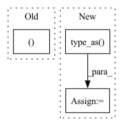

Pattern ID :26137
Before Change
// Get projection matrix for tgt camera frame to source pixel frame
proj_cam_to_src_pixel = intrinsics @ rot_mat // [B, 3, 3]
src_pixel_coords, computed_depth = cam2pixel2(
cam_coords, proj_cam_to_src_pixel, None, padding_mode) // [B,H,W,2]
projected_img = F.grid_sample(
img, src_pixel_coords, padding_mode=padding_mode, align_corners=True)After Change
R = euler2mat(rot) // [B, 3, 3]
P = torch.matmul(intrinsics, R)
world_points = depth_to_3d(torch.ones(B, 1, H, W).type_as( img) , intrinsics) // B 3 H W
cam_points = torch.matmul(P, world_points.view(B, 3, -1))
pix_coords = cam_points[:, :2, :] / (cam_points[:, 2, :].unsqueeze(1) + 1e-7)
pix_coords = pix_coords.view(B, 2, H, W)
pix_coords = pix_coords.permute(0, 2, 3, 1)
pix_coords[..., 0] /= W - 1
pix_coords[..., 1] /= H - 1
pix_coords = (pix_coords - 0.5) * 2 In pattern: SUPERPATTERN
Frequency: 4
Non-data size: 3
Instances Fragment ID: 78730801
Project Name: jiawangbian/sc_depth_pl
Commit Name: 6a50fb9e99035b26acd8d44a2965c6a5b8eaa4da
Time: 2022-08-18
Author: jiawang.bian@gmail.com
File Name: losses/inverse_warp.py
M Class Name: AnonimousClass
N Class Name: AnonimousClass
M Method Name: inverse_rotation_warp(4)
N Method Name: inverse_rotation_warp(4)
M Parent Class:
N Parent Class:
M File Name: losses/inverse_warp.py
N File Name: losses/inverse_warp.py
M Start Line: 275
M End Line: 284
N Start Line: 129
N End Line: 140
Before Change
codevectors = codevectors.reshape(batch_size, sequence_length, -1)
return codevectors, perplexity
After Change
hidden_states
)
else:
codevector_probs = hard_probs.type_as( hidden_states)
codevector_probs = codevector_probs.view(batch_size * sequence_length, self.num_groups, -1)
codebook = self.codevectors[0, :, :]
codebook = codebook.view(self.num_groups, self.num_vars, -1) Fragment ID: 78730805
Project Name: huggingface/optimum-graphcore
Commit Name: 2ec4ed72ea362414d20c9b112072f3aa7b3d399a
Time: 2022-07-29
Author: 91201457+thorinf@users.noreply.github.com
File Name: optimum/graphcore/models/wav2vec2/ipu_gumbel_vector_quantizer.py
M Class Name: IPUWav2Vec2GumbelVectorQuantizer
N Class Name: IPUWav2Vec2GumbelVectorQuantizer
M Method Name: forward(4)
N Method Name: forward(4)
M Parent Class: Wav2Vec2GumbelVectorQuantizer
N Parent Class: Wav2Vec2GumbelVectorQuantizer
M File Name: optimum/graphcore/models/wav2vec2/ipu_gumbel_vector_quantizer.py
N File Name: optimum/graphcore/models/wav2vec2/ipu_gumbel_vector_quantizer.py
M Start Line: 68
M End Line: 102
N Start Line: 80
N End Line: 110
Before Change
loss = loss_fct(active_logits, active_labels)
else:
loss = loss_fct(logits.view(-1), labels.view(-1))
outputs = (lossAfter Change
outputs = (logits,) + outputs[2:] // add hidden states and attention if they are here
if labels is not None:
labels = labels.type_as( logits)
loss_fct = torch.nn.BCEWithLogitsLoss()
// Only keep active parts of the loss
if attention_mask is not None:
active_loss = attention_mask.view(-1) == 1 Fragment ID: 78730806
Project Name: sleepychord/cogltx
Commit Name: fa95d7ee6ce795f575e14dcde6ec26c9437107c0
Time: 2020-03-05
Author: dm_thu@qq.com
File Name: models.py
M Class Name: Introspector
N Class Name: Introspector
M Method Name: forward(8)
N Method Name: forward(8)
M Parent Class: BertPreTrainedModel
N Parent Class: BertPreTrainedModel
M File Name: models.py
N File Name: models.py
M Start Line: 44
M End Line: 55
N Start Line: 43
N End Line: 57
Before Change
B, P, N, _ = part_pcs.shape
// shared-weight encoder
pcs = part_pcs.flatten(0, 1) // [B*P, N, 3]
pc_feats = self.encoder(pcs).unflatten(0, (B, P )) // [B, P, C]
// transformer feature fusion
pc_feats = self.corr_module(pc_feats, part_valids) // [B, P, C]
// MLP predict posesAfter Change
// shared-weight encoder
valid_pcs = part_pcs[valid_mask] // [n, N, 3]
valid_feats = self.encoder(valid_pcs) // [n, C]
pc_feats = torch.zeros(B, P, self.pc_feat_dim).type_as( valid_feats)
pc_feats[valid_mask] = valid_feats
// transformer feature fusion
pc_feats = self.corr_module(pc_feats, valid_mask) // [B, P, C]
// MLP predict poses Fragment ID: 78730808
Project Name: wuziyi616/multi_part_assembly
Commit Name: cb586c4febe6508914e90c32a5b69e70aecbbc4e
Time: 2022-03-07
Author: dazitu616@gmail.com
File Name: multi_part_assembly/models/pn_transformer/network.py
M Class Name: PNTransformer
N Class Name: PNTransformer
M Method Name: forward(2)
N Method Name: forward(4)
M Parent Class: pl.LightningModule
N Parent Class: pl.LightningModule
M File Name: multi_part_assembly/models/pn_transformer/network.py
N File Name: multi_part_assembly/models/pn_transformer/network.py
M Start Line: 71
M End Line: 93
N Start Line: 83
N End Line: 107